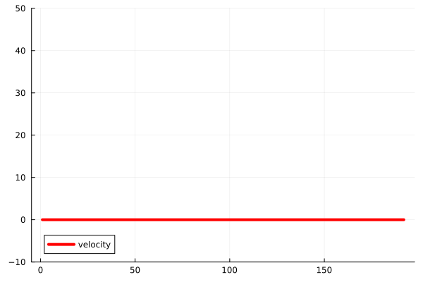
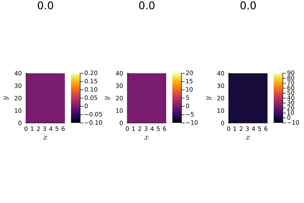

Tutorial for the 1D model
In this section, we describe how to use BloodFlowTrixi.jl with Trixi.jl. This tutorial will guide you through setting up and running a 1D blood flow simulation, including mesh creation, boundary conditions, numerical fluxes, and visualization of results.
Packages
Before starting, ensure that the required packages are loaded:
using Trixi
using BloodFlowTrixi
using OrdinaryDiffEq
using PlotsFirst, we need to choose the equation that describes the blood flow dynamics:
eq = BloodFlowEquations1D(; h=0.1)Here, h represents a parameter related to the initial condition or model scaling.
Mesh and boundary conditions
We begin by defining a one-dimensional Tree mesh, which discretizes the spatial domain:
mesh = TreeMesh(0.0, 40.0, initial_refinement_level=6, n_cells_max=10^4, periodicity=false)This generates a non-periodic mesh for the interval $[0, 40]$, with $2^{initial-refinement-level+1}-1$ cells. The parameter initial_refinement_level controls the initial number of cells, while n_cells_max specifies the maximum number of cells allowed during mesh refinement.
In Trixi.jl, the Tree mesh has two labeled boundaries: ***xneg*** (left boundary) and ***xpos*** (right boundary). These labels are used to apply boundary conditions:
bc = (
x_neg = boundary_condition_pressure_in,
x_pos = Trixi.BoundaryConditionDoNothing()
)boundary_condition_pressure_inapplies a pressure inflow condition at the left boundary.Trixi.BoundaryConditionDoNothing()specifies a "do nothing" boundary condition at the right boundary, meaning no flux is imposed.
Boundary condition implementation
The inflow boundary condition is defined as:
boundary_condition_pressure_in(u_inner, orientation_or_normal, direction, x, t, surface_flux_function, eq::BloodFlowEquations1D)This function applies a time-dependent pressure inflow condition.
Parameters
u_inner: State vector inside the domain near the boundary.orientation_or_normal: Normal orientation of the boundary.direction: Integer indicating the boundary direction.x: Position vector.t: Time scalar.surface_flux_function: Function to compute flux at the boundary.eq: Instance ofBloodFlowEquations1D.
Returns
The boundary flux is computed based on the inflow pressure: $ P{\text{in}} = \begin{cases} 2 \times 10^4 \sin^2\left(\frac{\pi t}{0.125}\right) & \text{if } t < 0.125 \ 0 & \text{otherwise} \end{cases} $ This time-dependent inflow pressure mimics a pulsatile flow, typical in arterial blood flow. The inflow area A{\text{in}}$ is determined using the inverse pressure relation, ensuring consistency with the physical model.
Numerical flux
To compute fluxes at cell interfaces, we use a combination of conservative and non-conservative fluxes:
volume_flux = (flux_lax_friedrichs, flux_nonconservative)
surface_flux = (flux_lax_friedrichs, flux_nonconservative)flux_lax_friedrichsis a standard numerical flux for hyperbolic conservation laws.flux_nonconservativehandles the non-conservative terms in the model, particularly those related to pressure discontinuities.
The non-conservative flux function is defined as:
flux_nonconservative(u_ll, u_rr, orientation::Integer, eq::BloodFlowEquations1D)Parameters
u_ll: Left state vector.u_rr: Right state vector.orientation::Integer: Orientation index.eq: Instance ofBloodFlowEquations1D.
Returns
The function returns the non-conservative flux vector, which is essential for capturing sharp pressure changes in the simulation.
Basis functions and Shock Capturing DG scheme
To approximate the solution, we use polynomial basis functions:
basis = LobattoLegendreBasis(2)This defines a Lobatto-Legendre basis of polynomial degree $2$, which is commonly used in high-order methods like Discontinuous Galerkin (DG) schemes.
We then define an indicator for shock capturing, focusing on the first variable (area perturbation $a$):
id = IndicatorHennemannGassner(eq, basis; variable=first)This indicator helps detect shocks or discontinuities in the solution and applies appropriate stabilization.
The solver is defined as:
vol = VolumeIntegralShockCapturingHG(id, volume_flux_dg=volume_flux, volume_flux_fv=surface_flux)
solver = DGSEM(basis, surface_flux, vol)Here, DGSEM represents the Discontinuous Galerkin Spectral Element Method, a high-order accurate scheme suitable for hyperbolic problems.
Semi-discretization
We are now ready to semi-discretize the problem:
semi = SemidiscretizationHyperbolic(
mesh,
eq,
initial_condition_simple,
source_terms = source_term_simple,
solver,
boundary_conditions=bc
)This step sets up the semi-discretized form of the PDE, which will be advanced in time using an ODE solver.
Source term
The source term accounts for additional forces acting on the blood flow, such as friction:
source_term_simple(u, x, t, eq::BloodFlowEquations1D)Parameters
u: State vector containing area perturbation, flow rate, elasticity modulus, and reference area.x: Position vector.t: Time scalar.eq::BloodFlowEquations1D: Instance of the blood flow model.
Returns
The source term vector is given by:
\[s_1 = 0\]
(no source for area perturbation).\[s_2 = \frac{2 \pi k Q}{R A}\]
, representing frictional effects.
The friction coefficient $k$ is computed using a model-specific friction function, and the radius $R$ is obtained from the state vector using the radius function.
Initial condition
The initial condition specifies the starting state of the simulation:
initial_condition_simple(x, t, eq::BloodFlowEquations1D; R0=2.0)This function generates a simple initial condition with a uniform radius R0.
Parameters
x: Position vector.t: Time scalar.eq::BloodFlowEquations1D: Instance of the blood flow model.R0: Initial radius (default:2.0).
Returns
The function returns a state vector with:
- Zero initial area perturbation.
- Zero initial flow rate.
- Constant elasticity modulus.
- Reference area $A_0 = \pi R_0^2$.
This simple initial condition is suitable for testing the model without introducing complex dynamics.
Run the simulation
First, we discretize the problem in time:
Trixi.default_analysis_integrals(::BloodFlowEquations1D) = ()
tspan = (0.0, 0.5)
ode = semidiscretize(semi, tspan)Here, tspan defines the time interval for the simulation.
Next, we add some callbacks to monitor the simulation:
summary_callback = SummaryCallback()
analysis_callback = AnalysisCallback(semi, interval=200)
stepsize_callback = StepsizeCallback(; cfl=0.5)
callbacks = CallbackSet(summary_callback, analysis_callback, stepsize_callback)SummaryCallbackprovides a summary of the simulation progress.AnalysisCallbackcomputes analysis metrics at specified intervals.StepsizeCallbackadjusts the time step based on the CFL condition.
Finally, we solve the problem:
dt = stepsize_callback(ode)
sol = solve(ode, SSPRK33(), dt=dt, dtmax=1e-4, dtmin=1e-11,
save_everystep=false, saveat=0.002, callback=callbacks)Here, SSPRK33() is a third-order Strong Stability Preserving Runge-Kutta method, suitable for hyperbolic PDEs.
Plot the results
The results can be visualized using the following code:
@gif for i in eachindex(sol)
a1 = sol[i][1:4:end]
Q1 = sol[i][2:4:end]
A01 = sol[i][4:4:end]
A1 = A01 .+ a1
plot(Q1 ./ A1, lw=4, color=:red, ylim=(-10, 50), label="velocity", legend=:bottomleft)
endThis code generates an animated GIF showing the evolution of the velocity profile over time. The velocity is computed as $Q/A$, where $Q$ is the flow rate, and $A$ is the cross-sectional area.
Plain code
using Trixi
using BloodFlowTrixi
using OrdinaryDiffEq,Plots
eq = BloodFlowEquations1D(;h=0.1)
mesh = TreeMesh(0.0,40.0,initial_refinement_level=6,n_cells_max=10^4,periodicity=false)
bc = (
x_neg = boundary_condition_pressure_in,
x_pos = Trixi.BoundaryConditionDoNothing()
)
volume_flux = (flux_lax_friedrichs,flux_nonconservative)
surface_flux = (flux_lax_friedrichs,flux_nonconservative)
basis = LobattoLegendreBasis(2)
id = IndicatorHennemannGassner(eq,basis;variable=first)
vol = VolumeIntegralShockCapturingHG(id,volume_flux_dg=volume_flux,volume_flux_fv=surface_flux)
solver = DGSEM(basis,surface_flux,vol)
semi = SemidiscretizationHyperbolic(mesh,
eq,
initial_condition_simple,
source_terms = source_term_simple,
solver,
boundary_conditions=bc)
Trixi.default_analysis_integrals(::BloodFlowEquations1D) = ()
tspan = (0.0, 0.5)
ode = semidiscretize(semi, tspan)
summary_callback = SummaryCallback()
analysis_callback = AnalysisCallback(semi, interval = 200)
stepsize_callback = StepsizeCallback(; cfl=0.5)
callbacks = CallbackSet(summary_callback,analysis_callback,stepsize_callback)
dt = stepsize_callback(ode)
sol = solve(ode, SSPRK33(), dt = dt, dtmax = 1e-4,dtmin = 1e-11,
save_everystep = false,saveat = 0.002, callback = callbacks)
@gif for i in eachindex(sol)
a1 = sol[i][1:4:end]
Q1 = sol[i][2:4:end]
A01 = sol[i][4:4:end]
A1 = A01.+a1
plot(Q1./A1,lw=4,color=:red,ylim=(-10,50),label="velocity",legend=:bottomleft)
end
Tutorial for the 2D model
In this section, we describe how to use BloodFlowTrixi.jl with Trixi.jl. This tutorial will guide you through setting up and running a 2D blood flow simulation, including mesh creation, boundary conditions, numerical fluxes, and visualization of results.
Packages
Before starting, ensure that the required packages are loaded:
using Trixi
using BloodFlowTrixi
using OrdinaryDiffEq
using PlotsFirst, we need to choose the equation that describes the blood flow dynamics:
eq = BloodFlowEquations2D(; h=0.1)Here, h represents a parameter related to the initial condition or model scaling.
Mesh and boundary conditions
We begin by defining a two-dimensional P4est mesh, which discretizes the spatial domain:
mesh = P4estMesh(
(2,4),
polydeg= 2,
coordinates_min =(0.0,0.0),
coordinates_max = (2*pi,40.0),
initial_refinement_level = 4,
periodicity = (false, false)
)This generates a non-periodic mesh for the domain $[0,2\pi] \times [0, 40]$, with $2\times 4\times 4^{\text{initial-refinement-level}}$ cells.
In Trixi.jl, the P4est mesh has four labeled boundaries: ***xneg*** (left boundary), ***xpos*** (right boundary), ***yneg*** (bottom boundary), and ***ypos*** (top boundary). These labels are used to apply boundary conditions:
bc = Dict(
:x_neg =>Trixi.BoundaryConditionDoNothing(),
:x_pos =>Trixi.BoundaryConditionDoNothing(),
:y_neg =>boundary_condition_pressure_in,
:y_pos => Trixi.BoundaryConditionDoNothing()
)
boundary_condition_pressure_inapplies a pressure inflow condition at the bottom boundary.Trixi.BoundaryConditionDoNothing()specifies a "do nothing" boundary condition at the right boundary, meaning no flux is imposed.
BUG WITH THE PERIODIC BOUNARY CONDITIONS.
Boundary condition implementation
The inflow boundary condition is defined as:
boundary_condition_pressure_in(u_inner, normal, x, t, surface_flux_function, eq::BloodFlowEquations2D)This function applies a time-dependent pressure inflow condition.
Parameters
u_inner: State vector inside the domain near the boundary.normal: Normal of the boundary.x: Position vector.t: Time scalar.surface_flux_function: Function to compute flux at the boundary.eq: Instance ofBloodFlowEquations2D.
Returns
The boundary flux is computed based on the inflow pressure: $ P{\text{in}} = \begin{cases} 2 \times 10^4 \sin^2\left(\frac{\pi t}{0.125}\right) & \text{if } t < 0.125 \ 0 & \text{otherwise} \end{cases} $ This time-dependent inflow pressure mimics a pulsatile flow, typical in arterial blood flow. The inflow area A{\text{in}}$ is determined using the inverse pressure relation, ensuring consistency with the physical model.
Numerical flux
To compute fluxes at cell interfaces, we use a combination of conservative and non-conservative fluxes:
volume_flux = (flux_lax_friedrichs, flux_nonconservative)
surface_flux = (flux_lax_friedrichs, flux_nonconservative)flux_lax_friedrichsis a standard numerical flux for hyperbolic conservation laws.flux_nonconservativehandles the non-conservative terms in the model, particularly those related to pressure discontinuities.
The non-conservative flux function is defined as:
flux_nonconservative(u_ll, u_rr, normal::Integer, eq::BloodFlowEquations2D)Parameters
u_ll: Left state vector.u_rr: Right state vector.normal: normal vector.eq: Instance ofBloodFlowEquations2D.
Returns
The function returns the non-conservative flux vector, which is essential for capturing sharp pressure changes in the simulation.
Basis functions and Shock Capturing DG scheme
To approximate the solution, we use polynomial basis functions:
basis = LobattoLegendreBasis(2)This defines a Lobatto-Legendre basis of polynomial degree $2$, which is commonly used in high-order methods like Discontinuous Galerkin (DG) schemes.
We then define an indicator for shock capturing, focusing on the first variable (area perturbation $a$):
id = IndicatorHennemannGassner(eq, basis; variable=first)This indicator helps detect shocks or discontinuities in the solution and applies appropriate stabilization.
The solver is defined as:
vol = VolumeIntegralShockCapturingHG(id, volume_flux_dg=volume_flux, volume_flux_fv=surface_flux)
solver = DGSEM(basis, surface_flux, vol)Here, DGSEM represents the Discontinuous Galerkin Spectral Element Method, a high-order accurate scheme suitable for hyperbolic problems.
Semi-discretization
We are now ready to semi-discretize the problem:
semi = SemidiscretizationHyperbolic(
mesh,
eq,
initial_condition_simple,
source_terms = source_term_simple,
solver,
boundary_conditions=bc
)This step sets up the semi-discretized form of the PDE, which will be advanced in time using an ODE solver.
Source term
The source term accounts for additional forces acting on the blood flow, such as friction:
source_term_simple(u, x, t, eq::BloodFlowEquations2D)Parameters
u: State vector containing area perturbation, flow rate, elasticity modulus, and reference area.x: Position vector.t: Time scalar.eq::BloodFlowEquations2D: Instance of the blood flow model.
Returns
The source term vector is given by:
\[s_1 = 0\]
(no source for area perturbation).\[s_2 = \frac{2R}{3}\mathcal{C} \sin \theta \frac{Q_s^2}{A} + \frac{3Rk Q_{Rθ}}{A}\]
.\[s_3 = -\frac{2R}{3}\mathcal{C} \sin \theta \frac{Q_s Q_{R\theta}}{A} + \frac{RkQ_{s}}{A}\]
.
The friction coefficient $k$ is computed using a model-specific friction function, and the radius $R$ is obtained from the state vector using the radius function. Also, the curvature $\mathcal{C}$ is computed using the curvature function and is equal to $1$ here.
Initial condition
The initial condition specifies the starting state of the simulation:
initial_condition_simple(x, t, eq::BloodFlowEquations2D; R0=2.0)This function generates a simple initial condition with a uniform radius R0.
Parameters
x: Position vector.t: Time scalar.eq::BloodFlowEquations2D: Instance of the blood flow model.R0: Initial radius (default:2.0).
Returns
The function returns a state vector with:
- Zero initial area perturbation.
- Zero initial flow rate (in $\theta$ and $s$ directions).
- Constant elasticity modulus.
- Reference area $A_0 = \frac{R_0^2}2$.
This simple initial condition is suitable for testing the model without introducing complex dynamics.
Run the simulation
First, we discretize the problem in time:
Trixi.default_analysis_integrals(::BloodFlowEquations2D) = ()
tspan = (0.0, 0.3)
ode = semidiscretize(semi, tspan)Here, tspan defines the time interval for the simulation.
Next, we add some callbacks to monitor the simulation:
summary_callback = SummaryCallback()
analysis_callback = AnalysisCallback(semi, interval=200)
stepsize_callback = StepsizeCallback(; cfl=0.5)
callbacks = CallbackSet(summary_callback, analysis_callback, stepsize_callback)SummaryCallbackprovides a summary of the simulation progress.AnalysisCallbackcomputes analysis metrics at specified intervals.StepsizeCallbackadjusts the time step based on the CFL condition.
Finally, we solve the problem:
dt = stepsize_callback(ode)
sol = solve(ode, SSPRK33(), dt=dt, dtmax=1e-4, dtmin=1e-11,
save_everystep=false, saveat=0.003, callback=callbacks)Here, SSPRK33() is a third-order Strong Stability Preserving Runge-Kutta method, suitable for hyperbolic PDEs.
Plot the results
The results can be visualized using the following code:
@gif for i in eachindex(sol)
pd = PlotData2D(sol[i],semi,solution_variables=cons2prim)
plt1 = Plots.plot(pd["A"],aspect_ratio=0.2)
plt2 = Plots.plot(pd["wtheta"],aspect_ratio=0.2)
plt3 = Plots.plot(pd["ws"],aspect_ratio=0.2)
plt4 = Plots.plot(pd["P"],aspect_ratio=0.2)
plot(plt1,plt2,plt3,plt4,layout=(2,2))
endThis code generates an animated GIF showing the evolution of the velocity profile over time. The velocity is computed as $Q/A$, where $Q$ is the flow rate, and $A$ is the cross-sectional area.
Plain code
using Trixi
using BloodFlowTrixi
using OrdinaryDiffEq,Plots
eq = BloodFlowEquations2D(;h=0.1)
mesh = P4estMesh(
(2,4),
polydeg= 2,
coordinates_min =(0.0,0.0),
coordinates_max = (2*pi,40.0),
initial_refinement_level = 4,
periodicity = (false, false)
)
bc = Dict(
:x_neg =>Trixi.BoundaryConditionDoNothing(),
:x_pos =>Trixi.BoundaryConditionDoNothing(),
:y_neg =>boundary_condition_pressure_in,
:y_pos => Trixi.BoundaryConditionDoNothing()
)
volume_flux = (flux_lax_friedrichs,flux_nonconservative)
surface_flux = (flux_lax_friedrichs,flux_nonconservative)
basis = LobattoLegendreBasis(2)
id = IndicatorHennemannGassner(eq,basis;variable=first)
vol =VolumeIntegralShockCapturingHG(id,volume_flux_dg = surface_flux,volume_flux_fv = volume_flux)
solver = DGSEM(basis,surface_flux,vol)
semi = SemidiscretizationHyperbolic(mesh,
eq,
initial_condition_simple,
source_terms = source_term_simple,
solver,
boundary_conditions = bc)
Trixi.default_analysis_integrals(::BloodFlowEquations2D) = ()
tspan = (0.0, 0.3)
ode = semidiscretize(semi, tspan)
summary_callback = SummaryCallback()
analysis_callback = AliveCallback(analysis_interval=1000)
stepsize_callback = StepsizeCallback(; cfl=0.5)
callbacks = CallbackSet(summary_callback,analysis_callback,stepsize_callback)
dt = stepsize_callback(ode)
sol = solve(ode, SSPRK33(),dt=dt, dtmax = 1e-4,dtmin = 1e-12,save_everystep = false,saveat = 0.003, callback = callbacks)
@gif for i in eachindex(sol)
pd = PlotData2D(sol[i],semi,solution_variables=cons2prim)
plt1 = Plots.plot(pd["A"],aspect_ratio=0.2)
plt2 = Plots.plot(pd["wtheta"],aspect_ratio=0.2)
plt3 = Plots.plot(pd["ws"],aspect_ratio=0.2)
plt4 = Plots.plot(pd["P"],aspect_ratio=0.2)
plot(plt1,plt2,plt3,plt4,layout=(2,2))
end